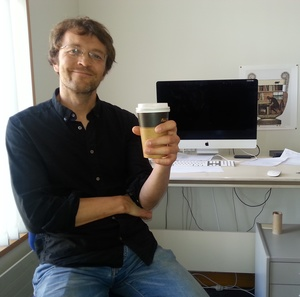
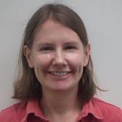

10th December 2018 (Monday) Tutorial | |||
| Tutorial Session (Presenter: Professor Phil Cohen, Monash University)Room TBA | |||
| 14:00 | Tutorial: Towards Collaborative Dialogue | ||
|---|---|---|---|
| 17:00 | End of Tutorial | ||
| 18:00 | Brewery Tour | ||
11th December 2018 (Tuesday) Day 1 | |||
| 8:30 | Registration | ||
| 9:00 | OpeningRoom TBA | ||
| Keynote 1 (Chair: Andrew Trotman)Room TBA | |||
| 9:15 | Jon Degenhardt, eBay | An Industry Perspective on Search and Search Applications | |
| 10:15 | Morning Tea | ||
| Session 1: Session A: text mining and applications (Chair: TBA)Room TBA | |||
| 10:45 | Rolando Coto Solano, Sally Akevai Nicholas and Samantha Wray | Development of Natural Language Processing Tools for Cook Islands Māori | |
| 11:05 | Bayzid Ashik Hossain and Rolf Schwitter | Specifying Conceptual Models Using Restricted Natural Language | |
| 11:25 | Jenny McDonald and Adon Moskal | Quantext: a text analysis tool for teachers | |
| 11:45 | Sudhir Mandarapu | Depression detection in clinical interview transcripts using Natural Language Processing and Deep Neural Networks | |
| 12:05 | Lunch | ||
| Keynote 2 (Chair: Xiuzhen Jenny Zhang)Room TBA | |||
| 13:00 | Associate Professor Alistair Knott, University of Otago | Learning to talk like a baby | |
| 14:15 | Poster Session Room TBA |
||
| 15:15 | Afternoon Tea | ||
| 16:50 | End of Day 1 | ||
| 19:00 | Hangi (Maori) Dinner | ||
12th December 2017 (Wednesday) Day 2 | |||
| Keynote 3 (Chair: TBA)Room TBA | |||
| 9:00 | Professor David Bainbridge, University of Waikato | Can You Really Do That? Exploring new ways to interact with Web content and the desktop | |
| 10:15 | Morning Tea | ||
| Session B: machine translation and speech (Chair: TBA)Room TBA | |||
| 10:45 | Cong Duy Vu Hoang, Gholamreza Haffari and Trevor Cohn | Improved Neural Machine Translation using Side Information |
|
| 11:05 | Aman Sinha and Radhika Mamidi | Evaluation of Machine Translation Systems for Sarcasm Transfer | |
| 11:25 | Satoru Tsuge and Shunichi Ishihara | Text-dependent Forensic Voice Comparison: Likelihood Ratio Estimation with the Hidden Markov Model (HMM) and Gaussian Mixture Model – Universal Background Model (GMM-UBM) Approaches | |
| 11:45 | Nitika Mathur, Timothy Baldwin and Trevor Cohn | Towards Efficient Machine Translation Evaluation by Modelling Annotators |
|
| 11:53 | Xuanli He, Quan Tran, William Havard, Laurent Besacier, Ingrid Zukerman and Gholamreza Haffari | Exploring Textual and Speech information in Dialogue Act Classification with Speaker Domain Adaptation | |
| 12:05 | Lunch | ||
| Keynote 4 (Chair: TBA)Room TBA | |||
| 12:55 | Dr. Kristin Stock, Massey University | "Where am I, and what am I doing here?" Extracting geographic information from natural language text | |
| 13:55 | Break 10 minutes | ||
| Session C: shared with ADCS (Chair: TBA)Room TBA | |||
| 14:05 | Alfan Farizki Wicaksono and Alistair Moffat | Exploring Interaction Patterns in Job Search | |
| 14:30 | Xavier Holt and Andrew Chisholm | Extracting structured data from invoices | |
| 14:50 | Bevan Koopman, Anthony Nguyen, Danica Cossio, Mary-Jane Courage and Gary Francois | Extracting Cancer Mortality Statistics from Free-text Death Certificates: A View from the Trenches | |
| 15:05 | Hanieh Poostchi and Massimo Piccardi | Cluster Labeling by Word Embeddings and WordNet's Hypernymy | |
| 15:15 | Afternoon Tea | Session D: word semantics and language generation (Chair: TBA)Room TBA | |
| 15:35 | Lance De Vine, Shlomo Geva and Peter Bruza | Unsupervised Mining of Analogical Frames by Constraint Satisfaction | |
| 15:55 | Qiongkai Xu, Lizhen Qu and Jiawei Wang | Decoupling Stylistic Language Generation | |
| 16:15 | Navnita Nandakumar, Bahar Salehi and Timothy Baldwin | A Comparative Study of Embedding Models in Predicting the Compositionality of Multiword Expressions | |
| Shared Task Session (Chair: Diego Molla-Aliod)16:25 Room TBA | |||
| 16:55 | Best Paper Awards | ||
| Business Meeting | |||
| Closing | |||
| 17:20 | End of Day 2 | ||
| 19:30 | Boat Trip | ||

Alistair Knott is an Associate Professor in the Computer Science department at the University of Otago. He studied Psychology and Philosophy at Oxford University, then took a MSc and PhD in Artificial Intelligence at the University of Edinburgh. His PhD research was on theories of discourse structure, focussing on how coherence relations are signalled by sentence and clause connectives. His postdoc work was in text generation, on Edinburgh University’s ILEX project, which developed one of the first text generators to be deployed on the web. After moving to New Zealand, Ali developed an interest in dialogue models, building a mixed-initiative multi-speaker dialogue system that combined HPSG and Discourse Representation Theory. Aside from these topics, Ali's main research interest for the last 20 years has been in models of how language is implemented in the brain. His focus is on models of the interface between language and the sensorimotor system, that address how it is we can talk about the things we see and do. In 2012 he published a programmatic model of this interface (‘Sensorimotor Cognition and Natural Language Syntax’, MIT Press). This model proposes that certain elements of syntactic structure have their origin in the structure of the sensorimotor routines involved in perceiving events in the world, and in the structure of the circuits which store these events in working memory. In 2017, Ali began working on a commercial contract with the Auckland-based AI startup Soul Machines. This company creates biologically realistic avatars that can engage in dialogues with human users. There is an emphasis on modelling dialogue agents’ physical bodies and sensory systems, and how these interface with actual brain mechanisms.. which makes it an ideal environment for Ali. Ali also works on the ethical and social implications of AI. In January 2016 co-founded the AI and Society discussion group at Otago University. This year he co-founded Otago’s Centre for AI and Public Policy, which is actively engaging with the New Zealand government to provide oversight of the predictive analytics tools used by government departments.
In recent years, computational linguists have embraced neural network models, and the vector-based representations of words and meanings they use. But while computational linguists have readily adopted the machinery of neural network models, they have been slower to embrace the original aim of neural network research, which was to understand how brains work. A large community of neural network researchers continues to pursue this ‘cognitive modelling’ aim, with very interesting results. But the work of these more cognitively minded modellers has not yet percolated deeply into computational linguistics. In my talk, I will argue the cognitive modelling tradition of neural networks has much to offer computational linguistics. I will outline a research programme that situates language modelling in a broader cognitive context. The programme is distinctive in two ways. Firstly, the initial object of study is a baby, rather than an adult. Computational linguistics models typically aim to reproduce adult linguistic competence in a single training process, that presents an ‘empty’ network with a corpus of mature language. I’ll argue that this training process doesn’t correspond to anything in human experience, and that we should instead aim to model a more gradual developmental process, that first achieves babylike language, then childlike language, and so on. Secondly, the new programme studies the baby's language system as it interfaces with her other cognitive systems, rather than by itself. It pays particular attention to the sensory and motor systems through which a baby engages with the physical world, which are the primary means by which it activates semantic representations. I’ll argue that the structure of these sensorimotor systems, as expressed in neural network models, offer interesting insights about certain aspects of linguistic structure. I will conclude by demoing a model of the interface between language and the sensorimotor system, as it operates in a baby at an early stage of language learning.

Dr Kristin Stock is Director of the Massey Geoinformatics Collaboratory, and a Senior Lecturer in Information Technology. She has 25 years’ experience in geospatial information management in the private, public and University sectors, has led a number of large international geospatial projects in Europe, Australia and New Zealand and played a key role in Europe-wide data sharing projects such as INSPIRE and EuroGEOSS. Her research focuses on geospatial natural language in collaboration with researchers in the Europe and Australia, most specifically on the development of methods for the extracting location information from text in order to map objects and events that cannot otherwise be located. Dr Stock was recently AI on a $2.74m MBIE Research Programme grant to develop a Maori land classification system, as well as receiving grants from MBIE (Our Land and Water National Science Challenge), the European Union FP7 programme and numerous industry-funders.
The extraction of place names (toponyms) from natural language text has received a lot of attention in recent years, but location is frequently described in more complex ways, often using other objects as reference points. Examples include: ‘The accident occurred opposite the Orewa Post Office, near the pedestrian crossing’ or ‘the sample was collected on the west bank of the Waikato River, about 3km upstream from Huntly’. These expressions can be vague, imprecise, underspecified, rely on access to information about other objects in the environment, and the semantics of spatial relations like ‘opposite’ and ‘on’ are still far from clear. Furthermore, many of these kinds of expressions are context sensitive, and aspects such as scale, geometry and type of geographic feature may influence the way the expression is understood. Both machine learning and rule-based approaches have been developed to try to firstly parse expressions of this kind, and secondly to determine the geographic location that the expression refers to. Several relevant projects will be discussed, including the development of a semantic rather than syntactic approach to parsing geographic location descriptions; the creation of a manually annotated training set of geographic language; the challenges highlighted from human descriptions of location in the emergency services context; the interpretation and geocoding of descriptions of flora and fauna specimen collections; the development of models of spatial relations using social media data and the use of instance-based learning to interpret complex location descriptions.